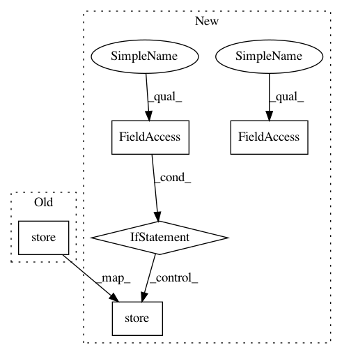

22a64f59bb70e6d2f75546d726c24a92addabecb,Reinforcement_learning_TUT/5.2_Prioritized_Replay_DQN/RL_brain.py,DoubleDQNPrioritizedReplay,store_transition,#DoubleDQNPrioritizedReplay#Any#Any#Any#Any#,418
Before Change
{self.s: s[np.newaxis, :], self.s_: s_[np.newaxis, :]})
error = r + np.max(q_next, axis=1) - q_eval[0, a]
self.memory.store(abs(error[0]), transition)
def choose_action(self, observation):
observation = observation[np.newaxis, :]
if np.random.uniform() < self.epsilon:
After Change
self.q_next = build_layers(self.s_, c_names, n_l1, w_initializer, b_initializer)
def store_transition(self, s, a, r, s_):
if self.prioritized: // prioritized replay
transition = np.hstack((s, [a, r], s_))
q_next, q_eval = self.sess.run([self.q_next, self.q_eval],
{self.s: s[np.newaxis, :], self.s_: s_[np.newaxis, :]})
error = r + np.max(q_next, axis=1) - q_eval[0, a]
self.memory.store(abs(error[0]), transition)
else: // random replay
if not hasattr(self, "memory_counter"):
self.memory_counter = 0
transition = np.hstack((s, [a, r], s_))
index = self.memory_counter % self.memory_size
self.memory.iloc[index, :] = transition
self.memory_counter += 1
def choose_action(self, observation):
observation = observation[np.newaxis, :]
if np.random.uniform() < self.epsilon:
actions_value = self.sess.run(self.q_eval, feed_dict={self.s: observation})
In pattern: SUPERPATTERN
Frequency: 3
Non-data size: 5
Instances
Project Name: MorvanZhou/tutorials
Commit Name: 22a64f59bb70e6d2f75546d726c24a92addabecb
Time: 2017-03-06
Author: morvanzhou@gmail.com
File Name: Reinforcement_learning_TUT/5.2_Prioritized_Replay_DQN/RL_brain.py
Class Name: DoubleDQNPrioritizedReplay
Method Name: store_transition
Project Name: markovmodel/PyEMMA
Commit Name: 886f1c9e1aa7dbd605ab90c1ef36bc2df6414f36
Time: 2017-06-30
Author: fabian-paul@users.noreply.github.com
File Name: pyemma/_ext/variational/estimators/running_moments.py
Class Name: RunningCovar
Method Name: add
Project Name: MorvanZhou/tutorials
Commit Name: 22a64f59bb70e6d2f75546d726c24a92addabecb
Time: 2017-03-06
Author: morvanzhou@gmail.com
File Name: Reinforcement_learning_TUT/5.2_Prioritized_Replay_DQN/RL_brain.py
Class Name: DoubleDQNPrioritizedReplay
Method Name: store_transition
Project Name: merenlab/anvio
Commit Name: acf629091cd6b8a8ae1e1e37e08fea69851d184b
Time: 2019-07-03
Author: eburgos@wisc.edu
File Name: anvio/dbops.py
Class Name: ProfileSuperclass
Method Name: store_gene_level_coverage_stats_into_genes_db